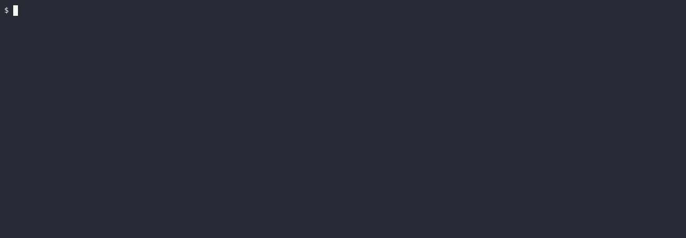

Background keyword
Occasionally, we may find ourselves repeating the same Given steps in all the scenarios of a feature.
Since it's repeated in each scenario, this is an indication that those steps are not quite essential to describe the scenarios, but rather are incidental details. So, we can move such Given steps to background, by grouping them under a Background section.
Background allows you to add some context to the scenarios following it. It can contain one or more steps, which are run before each scenario (but after any Before hooks).
Feature: Animal feature
Background:
Given a hungry cat
Rule: Hungry cat becomes satiated
Scenario: If we feed a hungry cat it will no longer be hungry
When I feed the cat
Then the cat is not hungry
Rule: Satiated cat remains the same
Background:
When I feed the cat
Scenario: If we feed a satiated cat it will not become hungry
When I feed the cat
Then the cat is not hungry
extern crate cucumber; extern crate tokio; use std::time::Duration; use cucumber::{World, given, then, when}; use tokio::time::sleep; #[derive(Debug, Default)] struct Cat { pub hungry: bool, } impl Cat { fn feed(&mut self) { self.hungry = false; } } #[derive(Debug, Default, World)] pub struct AnimalWorld { cat: Cat, } #[given(regex = r"^a (hungry|satiated) cat$")] async fn hungry_cat(world: &mut AnimalWorld, state: String) { sleep(Duration::from_secs(2)).await; match state.as_str() { "hungry" => world.cat.hungry = true, "satiated" => world.cat.hungry = false, _ => unreachable!(), } } #[when("I feed the cat")] async fn feed_cat(world: &mut AnimalWorld) { sleep(Duration::from_secs(2)).await; world.cat.feed(); } #[then("the cat is not hungry")] async fn cat_is_fed(world: &mut AnimalWorld) { sleep(Duration::from_secs(2)).await; assert!(!world.cat.hungry); } #[tokio::main] async fn main() { AnimalWorld::run("tests/features/book/writing/background.feature").await; }

NOTE:
Backgroundsteps indicated by>mark in the output.
NOTE: In case
Backgroundis declared outside anyRule, it will be run on any scenario. Otherwise, ifBackgroundis declared inside aRule, it will be run only for scenarios belonging to it, and only after top-levelBackgroundsteps (if any).
Best practices
- Don’t use
Backgroundto set up complicated states, unless that state is actually something the client needs to know. - Keep your
Backgroundsection short. - Make your
Backgroundsection vivid, use colorful names, and try to tell a story. - Keep your
Scenarios short, and don’t have too many.
Clearly, example provided above doesn't need Background and was made for demonstration purposes only.